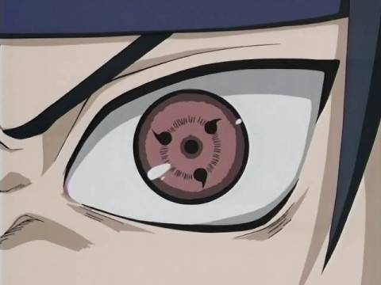
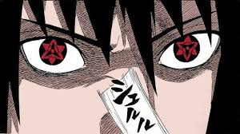

The Base sharingan
The Sharingan is one of the most iconic and powerful ocular jutsu in the Naruto series, primarily associated with the Uchiha clan. This dojutsu is characterized by its distinct appearance—when activated, the user's eyes take on a crimson red color with a black tomoe pattern, which varies in number from one to three in each eye. The Sharingan bestows its users with a wide range of extraordinary abilities, making it a formidable asset in combat and a symbol of the Uchiha's innate talent and prowess.
One of the fundamental abilities of the Sharingan is its exceptional visual perception. It allows users to see things at an accelerated rate, enabling them to track and analyze high-speed movements, predict an opponent's actions, and react swiftly to threats. This heightened perception is often used in conjunction with the Sharingan's ability to copy and mimic techniques after seeing them performed, allowing the user to learn and employ various jutsu rapidly. Additionally, the Sharingan is known for its proficiency in genjutsu, as users can cast illusions that manipulate their opponents' senses and mental state with incredible finesse.
As Sharingan users gain experience and grow emotionally, their eyes can evolve into more advanced forms, each marked by an increasing number of tomoe and a unique set of abilities. The Mangekyou Sharingan is the next stage of this evolution, granting even more potent and diverse powers but also exacting a significant cost, typically leading to the eventual loss of vision. These various stages of the Sharingan represent the Uchiha's journey, with each advancement bringing greater strength, but also deeper challenges and sacrifices.
Sharingan User FightThe mangekyou Sharingan
The Mangekyou Sharingan is an incredibly rare and powerful evolution of the base Sharingan in the Naruto series. It is typically awakened under extraordinary circumstances of trauma or intense emotional distress. What sets the Mangekyou Sharingan apart from its predecessors is its distinctive appearance: the eyes undergo a dramatic transformation, featuring unique and intricate patterns. The Mangekyou Sharingan grants its users a range of formidable abilities that can be both a blessing and a curse.
Each Mangekyou Sharingan has its own distinct abilities, and these powers vary from person to person. These abilities are often tied to the user's personal experiences and the emotions that triggered the Mangekyou Sharingan's awakening. For example, Itachi Uchiha's Mangekyou Sharingan allowed him to use the Tsukuyomi, an extremely potent genjutsu that could warp a victim's perception of time and reality. Kakashi Hatake's Mangekyou Sharingan gave him access to Kamui, a space-time ninjutsu that allowed him to teleport objects and people to another dimension.
However, the use of Mangekyou Sharingan comes at a significant cost. Each time its abilities are employed, it exacts a toll on the user's vision, leading to progressive blindness. To counter this, some Uchiha have sought to transplant the Mangekyou Sharingan of a close relative or ally, which results in the creation of the Eternal Mangekyou Sharingan, a state where the user retains the abilities of the Mangekyou Sharingan without the associated blindness. This pursuit of power and its consequences add a layer of complexity to the characters in the Naruto series, making the Mangekyou Sharingan a symbol of both extraordinary strength and tragic sacrifice.
Mangekyou Sharingan User Fight